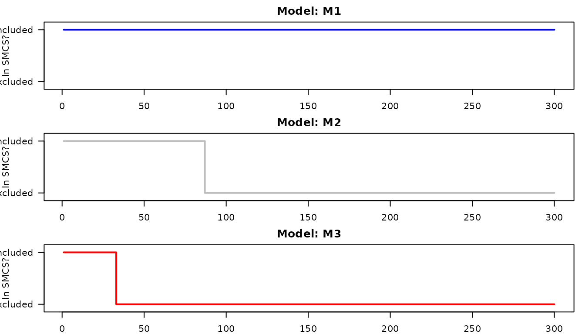

Overview
While compare_forecasts() evaluates exactly two models,
real-world applications often require comparing an arbitrary number of
candidate models
()
simultaneously.
Evaluating multiple models sequentially introduces a multiple-testing problem: if you run enough pairwise comparisons over enough time steps, you will eventually find false “statistically significant” differences by pure chance.
To solve this, seqcomp implements Sequential
Model Confidence Sets (SMCS) (Arnold et al., 2026). The SMCS is
the set of models that have not yet been confidently beaten by any other
model in the candidate pool. The package guarantees that the true best
model(s) will remain in the SMCS with probability at least
over the entire evaluation period. (If you are only comparing two
forecasters, we recommend starting with the introductory vignette.)
Two Notions of Superiority
When comparing multiple models, seqcomp tracks two
different definitions of what makes a model “superior”:
-
The Strong Null (
smcs_strong): A model is strongly superior if it performs at least as well as every other model at every single time step. If a model is consistently good but has occasional severe failures, it will be eliminated from this set. -
The Weak Null (
smcs_weak): A model is weakly superior if it performs at least as well as every other model on average over time. This allows models to remain in the set even if they occasionally issue bad forecasts, provided their long-term average remains dominant.
A simple multi-model example
Let’s generate a sequence of binary outcomes and three candidate forecasters:
-
M1: A highly accurate forecaster. -
M2: A mediocre forecaster that guesses randomly. -
M3: A terrible forecaster that is consistently wrong.
set.seed(2026)
T_sim <- 300
y <- rbinom(T_sim, size = 1, prob = 0.7)
# Create 3 forecasters
forecasts <- matrix(0, nrow = T_sim, ncol = 3)
colnames(forecasts) <- c("M1", "M2", "M3")
forecasts[, "M1"] <- ifelse(y == 1, 0.8, 0.2) # Highly accurate
forecasts[, "M2"] <- runif(T_sim, 0.4, 0.6) # Mediocre/random
forecasts[, "M3"] <- ifelse(y == 1, 0.2, 0.8) # Consistently wrong
head(forecasts)
#> M1 M2 M3
#> [1,] 0.8 0.5019408 0.2
#> [2,] 0.8 0.5009826 0.2
#> [3,] 0.8 0.5262100 0.2
#> [4,] 0.8 0.4685904 0.2
#> [5,] 0.8 0.5677538 0.2
#> [6,] 0.8 0.4215049 0.2Compare the forecasts
The easiest workflow for evaluating three or more models is to use
compare_multiple_forecasts().
multi_cmp <- compare_multiple_forecasts(
forecasts = forecasts,
outcomes = y,
scoring_rule = "brier",
alpha = 0.05
)
# Printing the object provides a clean summary of which models
# were excluded and when they first dropped out of the set.
multi_cmp
#> <seqcomp multi-model comparison>
#> 3 models, 300 time steps, alpha = 0.05, scoring rule = 'brier'
#>
#> -- Strong-null SMCS (Permanent Exclusion) --
#> model status_at_T first_dropped
#> M1 included -
#> M2 excluded 87
#> M3 excluded 33
#> final set size: 3 -> 1
#>
#> -- Weak-null SMCS (Dynamic Re-entry) --
#> model status_at_T first_dropped
#> M1 included -
#> M2 excluded 61
#> M3 excluded 22
#> final set size: 3 -> 1
#>
#> Use `x$smcs_strong` / `x$smcs_weak` for full inclusion matrices, or `x$scores` for pointwise scores.While the printed summary gives a quick overview, the underlying
object is a list containing the full time-indexed matrices for further
analysis(alongside metadata such as alpha and
scoring_rule):
-
multi_cmp$scores: The evaluated pointwise scores for each model. -
multi_cmp$smcs_strong: A logical matrix tracking whether each model belongs to the strong-null SMCS at time . -
multi_cmp$smcs_weak: A logical matrix tracking whether each model belongs to the weak-null SMCS at time .
Interpreting the SMCS output
smcs_strong() maintains a running
intersection over time: once a model is shown to violate the
null against some competitor, it is excluded permanently. This matches
the strong/uniformly-weak SMCS construction of Arnold, Gavrilopoulos,
Schulz and Ziegel (2026, Section 3.2).
The underlying hypothesis of smcs_weak() (the
time-varying weak null, Section 3.3) is defined at
each time
,
not cumulatively, so a model’s average performance can legitimately
recover after a bad stretch. smcs_weak() therefore returns
smcs, which can re-admit models that were previously
excluded.
Let’s look at the strong SMCS at the end of the evaluation:
tail(multi_cmp$smcs_strong)
#> M1 M2 M3
#> [295,] TRUE FALSE FALSE
#> [296,] TRUE FALSE FALSE
#> [297,] TRUE FALSE FALSE
#> [298,] TRUE FALSE FALSE
#> [299,] TRUE FALSE FALSE
#> [300,] TRUE FALSE FALSEWe can visualize how the confidence set shrinks over time by plotting
whether a model is TRUE (Included) or FALSE
(Excluded):
par(mfrow = c(3, 1), mar = c(2, 4, 2, 1))
colors <- c("blue", "gray", "red")
for (i in 1:3) {
plot(
1:T_sim, multi_cmp$smcs_strong[, i],
type = "s", col = colors[i], lwd = 2,
ylim = c(-0.1, 1.1), yaxt = "n", ylab = "In SMCS?",
main = paste("Model:", colnames(forecasts)[i])
)
axis(2, at = c(0, 1), labels = c("Excluded", "Included"), las = 2)
}
Notice how quickly the set shrinks:
-
M3(the terrible model) is confidently beaten byM1almost immediately and drops out of the set. -
M2(the mediocre model) survives a bit longer, but as evidence accumulates, it too is permanently excluded. -
M1(the true best model) remains in the SMCS for the entire duration.
Using lower-level functions directly
Just like the two-model case, seqcomp exposes the
underlying multi-model primitives if you need custom bounds, different
scoring rules, or adaptive betting fractions.
You can compute your own score matrices and pass them directly to
smcs_strong() or smcs_weak().
# Manually compute Brier scores
scores_mat <- matrix(0, nrow = T_sim, ncol = 3)
for(i in 1:3) scores_mat[, i] <- brier_score(forecasts[, i], y)
# Construct the Weak SMCS directly
# Brier score differences are bounded in [-1, 1], so we use c_param = 2
res_weak <- smcs_weak(
scores = scores_mat,
alpha = 0.05,
cs_method = "bernstein",
c_param = 2
)
tail(res_weak$smcs)
#> [,1] [,2] [,3]
#> [295,] TRUE FALSE FALSE
#> [296,] TRUE FALSE FALSE
#> [297,] TRUE FALSE FALSE
#> [298,] TRUE FALSE FALSE
#> [299,] TRUE FALSE FALSE
#> [300,] TRUE FALSE FALSEConditionally bounded scores (Tick loss)
Some scoring rules, like tick loss for quantile forecasting, are unbounded globally but bounded conditionally based on the distance between the forecasts.
For these rules, the strong SMCS requires a dynamically updating 3D
array of bounds and betting fractions. The wrapper
compare_multiple_forecasts() handles this automatically
when scoring_rule = "tick", or you can construct the arrays
manually using build_quantile_betting_arrays().
set.seed(7)
tau <- 0.5
truth <- rnorm(T_sim)
q_forecasts <- cbind(
M1 = truth + rnorm(T_sim, sd = 0.1), # accurate
M2 = rep(0, T_sim), # uninformative
M3 = truth + rnorm(T_sim, sd = 0.1) + 1 # biased
)
tick_cmp <- compare_multiple_forecasts(
forecasts = q_forecasts,
outcomes = truth,
scoring_rule = "tick",
tau = tau,
alpha = 0.05
)
#> Warning in compare_multiple_forecasts(forecasts = q_forecasts, outcomes =
#> truth, : smcs_weak is currently omitted for unbounded tick loss in this wrapper
#> (requires transformation).
tail(tick_cmp$smcs_strong)
#> M1 M2 M3
#> [295,] TRUE FALSE FALSE
#> [296,] TRUE FALSE FALSE
#> [297,] TRUE FALSE FALSE
#> [298,] TRUE FALSE FALSE
#> [299,] TRUE FALSE FALSE
#> [300,] TRUE FALSE FALSEsmcs_weak is NULL here, since tick-loss
score differences are only conditionally bounded, not uniformly bounded,
and smcs_weak() currently requires a fixed uniform
bound.